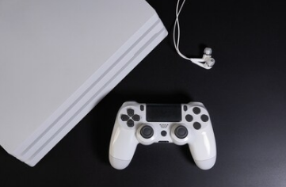
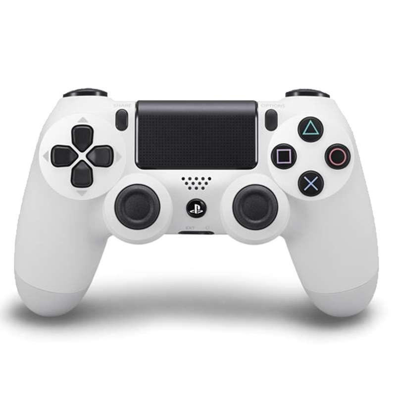

PlayStation 4
PlayStation 4是索尼电脑娱乐公司推出的家用游戏机。是PlayStation游戏机系列的第四代游戏主机，采用AMD Jaguar 8core处理器。
PlayStation 4属于第八世代的游戏机，作为PS3的后续机种，并将与任天堂的Wii U和微软的Xbox One共同在市场上竞争，PlayStation 4采用以AMD为基础的x86-64架构处理器，与使用CELL架构的PlayStation®3不同。
更换处理器架构的目的是让游戏开发的过程变得更容易，以吸引更多不同的开发者加入。这样的变更是来自于索尼在PlayStation 3的开发、制造和发售过程中所学习到的经验。PlayStation 4其他重要的硬件特征包括内建8 GB的GDDR5整合式内存、更快速的蓝光光驱，以及专门用来处理音频、影像，以及其它背景服务的定制处理芯片。
在新的应用和服务方面，索尼在智能手机和平板电脑上推出专属应用程序PlayStation App，让这些装置成为第二屏幕以加强游戏体验。索尼也计划推出云游戏串流服务“PlayStation Now”（原GaiKai），将可下载内容与游戏储存于云服务器中。此外，新的控制器上增加了“分享”按钮，将让使用者可以观看其他人游玩过程的串流直播与截图及录制视频。
配置规格
官方宣称PS4主机的运算能力大约是PS3主机的十倍，游戏画面进一步提升分辨率到1080P。对比PS3，PS4加入不少特色，例如跨游戏语音聊天功能、转型成真实好友构成的网络以及通过Ustream和Twitch网络串流实况转播游玩画面。据称有更多的PS4机能将会陆续推出。在主机开发过程中，为了避免过于追求性能而使制作游戏软件更加困难的情况的发生，索尼放弃了PlayStation 3原有的设计，重新选择了与个人电脑相同的 X86 构架，使得游戏开发更加容易；但缺点是无法向下兼容PS3、PS2或是PS1游戏。
PlayStation®4使用了由索尼与AMD合作开发的APU处理器，整合了CPU、GPU和声卡。
其八核心的cpu是由两个主频为1.6G的4核心CPU组成。
GPU由72个16D浮点运算单元组成（18组，每组4个），浮点运算能力为1.84T/s
PlayStation 4配有8 GB的GDDR5共享内存，一改历代游戏机内存小的缺点。
GDDR5内存的主频为1.4 G（等效5.6G），其速度（带宽）为176 GB/s。
控制器
PlayStation 4的主要控制器是DualShock 4，通过蓝牙2.1+EDR与主机链接，旧款控制器DualShock™3则无法在PlayStation®4上使用。DualShock™4加入了数项全新的功能，包括正面配有可按压的双点电容式感应触控板。此外控制器亦支持动态传感，内建三轴陀螺仪和三轴加速器，其震动功能亦有改进。DualShock™4也是第一款正式支持Windows个人电脑的PlayStation®原厂控制器。控制器内建不可拆除的充电式锂电池，容量为1000 mAh。控制器重量约为210公克，尺寸为162x52x98公厘，使用橡胶与塑胶材质增加握持感。
控制器内建有数个输出连接端口。其中的3.5mm TRRS立体声接孔可连接耳机与麦克风，能让使用者同时接收并传送音频。此外控制器上亦配有一个Micro-USB连接端口、一个扩充连接端口，以及一个单声道扬声器。控制器可通过mirco-USB或专属充电座进行充电。
DualShock™4同时也装载了可显示各种颜色的光条。不同的颜色可用来代表不同的玩者，并可作为重要消息的提示之用（例如游戏人物的生命值降低等）。此外光条也可与PlayStation®Camera摄影机互动，让摄影机能通过光条来判定控制器的动作和距离远近。这项功能是以PlayStation®Move技术为基础，既有的PlayStation®Move控制器亦可在PlayStation®4上使用。